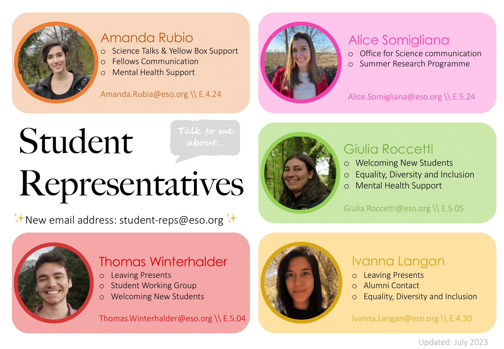
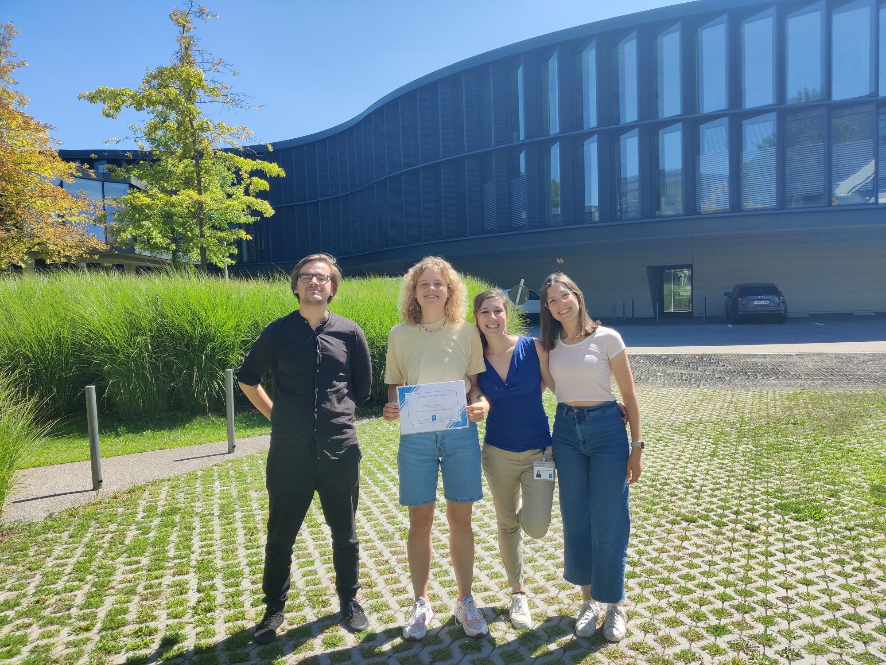

Here you can find some side activities and projects (more or less work-related) that I engage in alongside research itself.
In response to an increasing demand from early career folks for English outreach opportunities, with the students and postdoc representatives at MPIA we have started the process to reactivate the dormant Heidelberg satellite of Astronomy on Tap. We are currently assembling the organising team - if you are based in Heidelberg and would like to be involved, get in touch!
Since June 2026, I am part of the MPIA postdoc representatives. Over these past few months, my main focus has been improving the travel booking and reimbursement experience for early career folks; I am also leading the effort to revive the Heidelberg Astronomy on Tap satellite (see above), to provide international researchers with an opportunity to engage in outreach activities in English. As postdoc reps, we are also working towards the implementation of a buddy system to improve the onboarding experience, as well as organising career talks by faculty members before and during application season.
I am one of the PFE Coffee Organisers at MPIA, a weekly seminar on planet and star formation topics. During my time at ESO I was organiser of the Star and Planet Formation Coffee, a weekly informal meeting to discuss recently published papers or their own latest results, as well as the Journal Club, a weekly institute-wide appointment consisting of two paper presentations.
Between May 2022 and February 2024, I was part of the Student Representatives at ESO. The team was composed of five people, including myself, with the aim to advocate for the students community and be a point of contact between them and the institutional bodies.
Over the months I had the pleasure and honor to work with Joshiwa, Ivanna, Samuel, Gemma, Thomas, Amanda, Giulia, and Mari-Liis, amazing friends and colleagues. Being a team of five allowed us to take on more work than the just the expected duties, so that we could shape our roles in a way that best complements our own nature and inclinations. For the first period (May 2022 - July 2023) I have been in charge of welcoming newcomers and helping them out with bureaucracy, practical aspects and so on; I was also co-coordinating the Student Working Group, whose aim is to further improve the already great condition of students at ESO. In July 2023, after the latest elections, we reshuffled the roles among us and I decided to take on the duty of communicating with the Office for Science. In this role I served mainly as spokesperson for the students: my main tasks include collecting the students' doubts, requests and concerns and communicating them to the higher levels at ESO, as well as informing the students of matters and news that regard them. I also coordinated the Summer Students representatives.
Some of the activities and achievements I am mostly proud of include requesting, and obtaining, financial support to balance the increased cost of living (November-December 2022), still in place as of now (2025); handling disagreements and controversies, with the help of respectful workplace advisors; applying for funding to organise three PhD courses over 2024 on topics chosen by the students via surveys (September 2023).
This experience allowed me to fully explore the many different aspects of working in an interngovernmental organisation and to gain a deeper understanding of the amazing underlying complexity. I am very grateful to have been able to experience ESO not only as a scientist, but also from the more human perspective of giving back to the community.


I have had the opportunity to be involved in the supervision of three brilliant Bachelor and Master's students. In 2026, I supervised Gloria Giamberardini, who spent four months at MPIA within the Erasmus Traineeship internship framework working on Diskpop simulations of protoplanetary discs. In 2025, with Francesco Zagaria, I co-supervised Jasmine Khalil, who did a three-month summer internship at MPIA. In 2023, with Marta de Simone and Łukasz Tychoniec, I co-supervised Daria Zaremba, who participated in the 5th ESO Summer Research Programme.
The picture shows (left to right) Łukasz, Daria, Marta, and myself on the last day of the 2023 ESO Summer Research Programme.